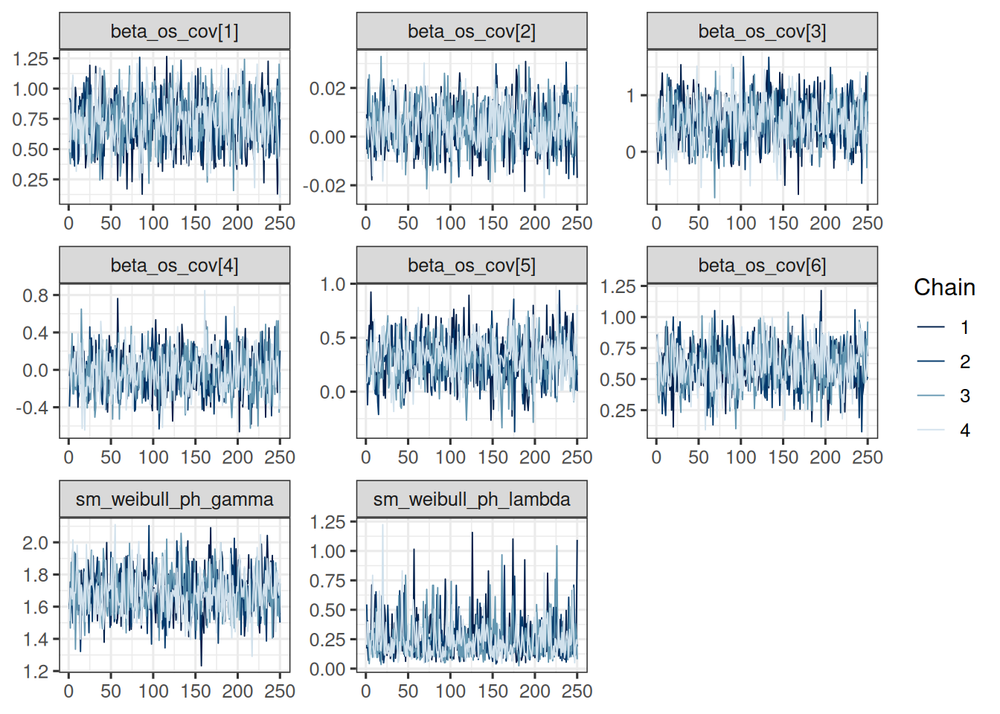
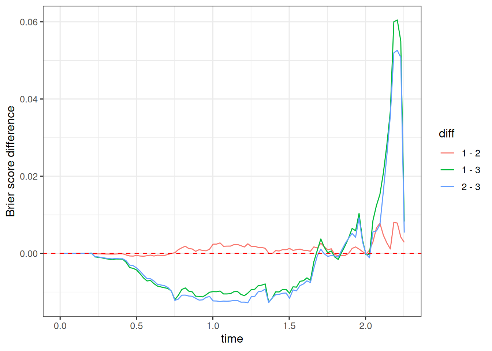

Show the code
subj_df <- os_data |>
mutate(study = "OAK") |>
select(study, id, arm)
subj_data <- DataSubject(
data = subj_df,
subject = "id",
arm = "arm",
study = "study"
)jmpostThe purpose of this document is to show a minimal workflow for fitting a Weibull OS model using the jmpost package.
Here we execute the R code from the setup and data preparation chapter, see the full code here.
Let’s use jmpost to fit the Stein-Fojo model to the TGI dataset. This works analogously to what we showed in the previous session.
First we again prepare the data objects, starting with the subject level data:
subj_df <- os_data |>
mutate(study = "OAK") |>
select(study, id, arm)
subj_data <- DataSubject(
data = subj_df,
subject = "id",
arm = "arm",
study = "study"
)Next we prepare the longitudinal data object.
long_df <- tumor_data |>
select(id, year, sld)
long_data <- DataLongitudinal(
data = long_df,
formula = sld ~ year
)Now we can create the JointData object for the TGI model:
tgi_joint_data <- DataJoint(
subject = subj_data,
longitudinal = long_data
)We specify the Stein-Fojo model together with the priors for the model parameters:
tgi_mod <- JointModel(
longitudinal = LongitudinalSteinFojo(
mu_bsld = prior_normal(log(65), 1),
mu_ks = prior_normal(log(0.52), 1),
mu_kg = prior_normal(log(1.04), 1),
omega_bsld = prior_normal(0, 3) |> set_limits(0, Inf),
omega_ks = prior_normal(0, 3) |> set_limits(0, Inf),
omega_kg = prior_normal(0, 3) |> set_limits(0, Inf),
sigma = prior_normal(0, 3) |> set_limits(0, Inf)
)
)Now we can fit the model:
save_file <- here("session-os/tgi1.rds")
if (file.exists(save_file)) {
tgi_results <- readRDS(save_file)
} else {
tgi_results <- sampleStanModel(
tgi_mod,
data = tgi_joint_data,
iter_sampling = ITER,
iter_warmup = WARMUP,
chains = CHAINS,
parallel_chains = CHAINS,
thin = CHAINS,
seed = BAYES.SEED,
refresh = REFRESH
)
saveObject(tgi_results, file = save_file)
}The function saveObject() was added to the package recently, please update your installation if it is not yet available.
Note that this is considerably faster than fitting the larger dataset of 701 patients. Let’s check the convergence of the population parameters:
vars <- c(
"lm_sf_mu_bsld",
"lm_sf_mu_ks",
"lm_sf_mu_kg",
"lm_sf_sigma",
"lm_sf_omega_bsld",
"lm_sf_omega_ks",
"lm_sf_omega_kg"
)
mcmc_tgi_results <- cmdstanr::as.CmdStanMCMC(tgi_results)
mcmc_tgi_results$summary(vars)# A tibble: 11 × 10
variable mean median sd mad q5 q95 rhat ess_bulk ess_tail
<chr> <dbl> <dbl> <dbl> <dbl> <dbl> <dbl> <dbl> <dbl> <dbl>
1 lm_sf_mu… 3.75 3.75 0.0375 0.0376 3.69 3.81 1.01 298. 572.
2 lm_sf_mu… -0.270 -0.255 0.298 0.308 -0.789 0.163 1.00 641. 680.
3 lm_sf_mu… -1.22 -1.16 0.360 0.343 -1.90 -0.708 0.999 723. 852.
4 lm_sf_mu… -0.731 -0.723 0.174 0.167 -1.02 -0.462 1.00 604. 762.
5 lm_sf_mu… -0.973 -0.969 0.157 0.150 -1.25 -0.728 1.00 641. 869.
6 lm_sf_si… 0.129 0.129 0.00381 0.00373 0.123 0.135 1.00 883. 892.
7 lm_sf_om… 0.531 0.529 0.0288 0.0294 0.486 0.583 1.00 518. 751.
8 lm_sf_om… 1.09 1.08 0.212 0.207 0.771 1.44 1.00 704. 861.
9 lm_sf_om… 1.45 1.42 0.271 0.251 1.07 1.95 0.999 731. 994.
10 lm_sf_om… 0.694 0.684 0.0963 0.0881 0.556 0.860 1.01 930. 904.
11 lm_sf_om… 0.994 0.983 0.103 0.100 0.840 1.17 1.01 762. 869.draws_tgi_results <- mcmc_tgi_results$draws(vars)
mcmc_trace(draws_tgi_results)
So this looks good.
We can now extract the individual growth rate estimates from the model. Later, in the joint model, we are going to use the log of the growth parameter as the link. Therefore we also here first log transform the sampled values of the growth rate estimates \(\psi_{\text{kg}, i}\), and then take the mean. Since the relevant random effect parameter samples are already stored in the mcmc_tgi_results object, we can work with that via the rvars interface.
The only tricky part is that we need to match the IDs of the patients manually, because jmpost just numbers the patients in the order they appear in the data, which is then the index for all the random effects and individual growth parameters \(\psi_{\text{kg}, i}\).
However, we need to be careful to extract the data order from the tgi_joint_data object, because the subject data set is reordered by the sorted patient ID during the creation of the DataJoint object. If we don’t do this correctly, then we would permute the growth rates randomly between the patients and thereby destroy the link between the growth rates and the patients.
log_growth_samples <- mcmc_tgi_results |>
# We use here `rvars` because it allows to apply the
# mutation across all subjects at once.
as_draws_rvars() |>
mutate_variables(log_growth = log(lm_sf_psi_kg))
subj_log_kg_est <- log_growth_samples |>
subset_draws(variable = "log_growth") |>
summary() |>
# Important: Take the IDs from `tgi_joint_data` and not from `subj_data` here!
mutate(id = tgi_joint_data@subject@data$id)
head(subj_log_kg_est)# A tibble: 6 × 11
variable mean median sd mad q5 q95 rhat ess_bulk ess_tail id
<chr> <dbl> <dbl> <dbl> <dbl> <dbl> <dbl> <dbl> <dbl> <dbl> <fct>
1 log_grow… -0.982 -0.808 0.902 0.927 -2.65 0.130 1.00 937. 1037. 1008
2 log_grow… -1.09 -1.04 0.894 0.921 -2.62 0.246 0.999 929. 731. 1018
3 log_grow… -1.01 -0.911 0.367 0.264 -1.72 -0.590 1.00 888. 717. 1019
4 log_grow… -0.760 -0.729 0.594 0.619 -1.79 0.117 1.00 857. 950. 1021
5 log_grow… -1.09 -1.03 0.885 0.910 -2.62 0.217 1.01 976. 852. 1026
6 log_grow… -1.46 -1.38 0.814 0.845 -2.96 -0.313 1.00 905. 915. 1027 In the latest version of jmpost this process has now been simplified, and we can use the LongitudinalRandomEffects() function as follows:
subj_log_kg_est_alt <- LongitudinalRandomEffects(tgi_results) |>
# We need to convert this to a data.frame to be able to do the log transformation.
as.data.frame() |>
filter(parameter == "g") |>
mutate(values = log(values)) |>
group_by(subject) |>
summarize(log_kg_est = mean(values))
head(subj_log_kg_est_alt)# A tibble: 6 × 2
subject log_kg_est
<chr> <dbl>
1 1008 -0.982
2 1018 -1.09
3 1019 -1.01
4 1021 -0.760
5 1026 -1.09
6 1027 -1.46 So this gives the same resulting log growth rates, which is reassuring.
We now add the e.g. posterior mean estimate of the individual log growth rates to the OS data set, such that we will be able to use it below as a covariate in the OS model:
os_data_with_log_kg_est <- os_data |>
select(id, arm, ecog, age, race, sex, os_time, os_event) |>
left_join(select(subj_log_kg_est, mean, id), by = "id") |>
rename(log_kg_est = mean)
head(os_data_with_log_kg_est)# A tibble: 6 × 9
id arm ecog age race sex os_time os_event log_kg_est
<fct> <fct> <fct> <dbl> <fct> <fct> <dbl> <lgl> <dbl>
1 588 Docetaxel 0 61 WHITE F 2.05 FALSE -0.571
2 330 MPDL3280A 1 56 WHITE F 1.68 FALSE -1.89
3 791 Docetaxel 0 72 WHITE F 0.901 TRUE -0.518
4 635 Docetaxel 0 42 OTHER F 1.66 TRUE -0.642
5 365 MPDL3280A 0 64 WHITE F 1.43 TRUE -0.427
6 773 Docetaxel 0 65 WHITE M 1.63 FALSE 0.0340save_file <- here("session-os/os_data_with_log_kg.rds")
if (!file.exists(save_file)) {
saveRDS(os_data_with_log_kg_est, file = save_file)
}As a sanity check to make sure we linked the growth rates correctly to the patients, let’s compare the average log growth rates computed from the above data set with the average we would expect based on the log normal distribution. Remember from the TGI session that we have:
\[ \log(\psi_{k_{g}}) \sim \text{Normal}(\mu_{k_{g}}, \omega_{g}) \]
within each treatment arm.
# Compute the mean using the individual estimates:
log_growth_summary <- os_data_with_log_kg_est |>
group_by(arm) |>
summarise(mean = mean(log_kg_est))
# And now compute the mean from the original model parameter samples:
log_growth_check <- mcmc_tgi_results$summary("lm_sf_mu_kg") |>
mutate(
arm = recode(
variable,
# The order here is given by the order of the arm factor levels.
"lm_sf_mu_kg[1]" = "Docetaxel",
"lm_sf_mu_kg[2]" = "MPDL3280A"
)
) |>
select(arm, mean)
# We can compare:
log_growth_summary# A tibble: 2 × 2
arm mean
<fct> <dbl>
1 Docetaxel -0.738
2 MPDL3280A -0.989log_growth_check# A tibble: 2 × 2
arm mean
<chr> <dbl>
1 Docetaxel -0.731
2 MPDL3280A -0.973So this looks good, and we can continue with this data set.
Now we can fit the OS model.
We start by preparing the DataSurvival object:
surv_data <- DataSurvival(
data = os_data_with_log_kg_est,
formula = Surv(os_time, os_event) ~
ecog + age + race + sex + log_kg_est
)Note that we are not including the treatment arm here, but only the log growth rate estimates. In addition, the covariates in the model include the ECOG score, age, race and sex. The idea is that the treatment effect is fully captured in the log growth rate estimates, which is referred to as “Working assumption (1)” in the slides.
Now we can create the JointData object for the OS model:
os_joint_data <- DataJoint(
subject = subj_data,
survival = surv_data
)We specify the Weibull model together with the priors for the model parameters. We take vague priors for the regression coefficients beta. For lambda and gamma, we start from the scale of the survival data at hand: the average survival time is 1.3 years, just taking a crude average of all survival times.
We can quickly write the function that gives the mean of the Weibull distribution with fixed lambda and gamma:
weibull_mean <- function(lambda, gamma) {
base::gamma(1 + 1 / gamma) / lambda
}Therefore, playing around with this a bit, we can e.g. center the prior for lambda around 0.7 and the prior for gamma around 1.5, giving a mean survival time of 1.3 years.
If we want to use Gamma distributions e.g. for lambda and gamma, we can use the prior_gamma function. The two parameters of this distribution are the shape and the rate. The mean is shape divided by the rate. So easiest is to keep a rate of 1 and just set the shape to the mean value we need:
os_mod <- JointModel(
survival = SurvivalWeibullPH(
lambda = prior_gamma(0.7, 1),
gamma = prior_gamma(1.5, 1),
beta = prior_normal(0, 20)
)
)Because we use a large prior variance for beta, we need to adjust the default initial value construction used in jmpost. As explained here, we can change the shrinkage of the initial values to the mean. We can then check what the initial values will be, to make sure that they are reasonable:
options("jmpost.prior_shrinkage" = 0.999)
initialValues(os_mod, n_chains = CHAINS)[[1]]
[[1]]$sm_weibull_ph_lambda
[1] 0.700321
[[1]]$sm_weibull_ph_gamma
[1] 1.499711
[[1]]$beta_os_cov
[1] -0.02989019
[[2]]
[[2]]$sm_weibull_ph_lambda
[1] 0.6995603
[[2]]$sm_weibull_ph_gamma
[1] 1.498748
[[2]]$beta_os_cov
[1] 0.02242418
[[3]]
[[3]]$sm_weibull_ph_lambda
[1] 0.6993422
[[3]]$sm_weibull_ph_gamma
[1] 1.498768
[[3]]$beta_os_cov
[1] -0.00745649
[[4]]
[[4]]$sm_weibull_ph_lambda
[1] 0.7015934
[[4]]$sm_weibull_ph_gamma
[1] 1.50195
[[4]]$beta_os_cov
[1] 0.0001373157So the values are now close to the means of the respective prior distributions. We can then see later if the chains were converging well. If not, we could as an alternative also manually set initial values, as explained here.
Now we can fit the model:
save_file <- here("session-os/os1.rds")
if (file.exists(save_file)) {
os_results <- readRDS(save_file)
} else {
os_results <- sampleStanModel(
os_mod,
data = os_joint_data,
iter_sampling = ITER,
iter_warmup = WARMUP,
chains = CHAINS,
parallel_chains = CHAINS,
thin = CHAINS,
seed = BAYES.SEED,
refresh = REFRESH
)
saveObject(os_results, file = save_file)
}Note that here we can get warnings at the beginning of the chains’ sampling process (“The current Metropolis proposal is about to be rejected …”). As long as this only happens in the beginning, and not during the sampling later, then this is not a cause for concern.
Let’s check the convergence of the population parameters:
vars <- c(
"beta_os_cov",
"sm_weibull_ph_gamma",
"sm_weibull_ph_lambda"
)
mcmc_os_results <- cmdstanr::as.CmdStanMCMC(os_results)
mcmc_os_results$summary(vars)# A tibble: 8 × 10
variable mean median sd mad q5 q95 rhat ess_bulk
<chr> <dbl> <dbl> <dbl> <dbl> <dbl> <dbl> <dbl> <dbl>
1 beta_os_cov[1] 0.724 0.728 0.207 0.214 0.386 1.06 1.00 957.
2 beta_os_cov[2] 0.00445 0.00463 0.00920 0.00937 -0.0101 0.0194 0.999 1043.
3 beta_os_cov[3] 0.542 0.542 0.400 0.419 -0.124 1.17 0.998 942.
4 beta_os_cov[4] -0.0268 -0.0307 0.221 0.221 -0.373 0.333 1.00 1046.
5 beta_os_cov[5] 0.302 0.303 0.201 0.198 -0.0342 0.630 1.00 718.
6 beta_os_cov[6] 0.597 0.587 0.172 0.170 0.321 0.880 1.00 742.
7 sm_weibull_ph… 1.69 1.68 0.135 0.131 1.47 1.92 1.00 933.
8 sm_weibull_ph… 0.248 0.208 0.164 0.115 0.0720 0.556 0.999 983.
# ℹ 1 more variable: ess_tail <dbl>draws_os_results <- mcmc_os_results$draws(vars)
mcmc_trace(draws_os_results)
In order to better see which of the coefficients relate to which covariates, we can rename them as follows:
surv_data_design <- as_stan_list(surv_data)$os_cov_design
os_cov_names <- colnames(surv_data_design)
old_coef_names <- glue::glue("beta_os_cov[{seq_along(os_cov_names)}]")
draws_os_results <- do.call(
rename_variables,
c(list(draws_os_results), setNames(old_coef_names, os_cov_names))
)
mcmc_dens_overlay(draws_os_results) +
geom_vline(xintercept = 0, linetype = "dashed", color = "red")
summary(draws_os_results)# A tibble: 8 × 10
variable mean median sd mad q5 q95 rhat ess_bulk
<chr> <dbl> <dbl> <dbl> <dbl> <dbl> <dbl> <dbl> <dbl>
1 ecog1 0.724 0.728 0.207 0.214 0.386 1.06 1.00 957.
2 age 0.00445 0.00463 0.00920 0.00937 -0.0101 0.0194 0.999 1043.
3 raceOTHER 0.542 0.542 0.400 0.419 -0.124 1.17 0.998 942.
4 raceWHITE -0.0268 -0.0307 0.221 0.221 -0.373 0.333 1.00 1046.
5 sexM 0.302 0.303 0.201 0.198 -0.0342 0.630 1.00 718.
6 log_kg_est 0.597 0.587 0.172 0.170 0.321 0.880 1.00 742.
7 sm_weibull_ph… 1.69 1.68 0.135 0.131 1.47 1.92 1.00 933.
8 sm_weibull_ph… 0.248 0.208 0.164 0.115 0.0720 0.556 0.999 983.
# ℹ 1 more variable: ess_tail <dbl>save_file <- here("session-os/os_draws.rds")
if (!file.exists(save_file)) {
saveRDS(draws_os_results, file = save_file)
}So we can see that the 90% credible interval (CI) for the log_kg_est and ecog1 covariate coefficients excludes 0, so both are “significant” predictors of the hazard rate. On the other hand, the race dummy variables’ and the age variable’s coefficient CIs clearly include 0. The situation is less clear for sex: here the CI barely includes 0.
In addition, we can also look at the posterior probabilities to have a hazard ratio above 1:
draws_os_results |>
as_draws_df() |>
summarise_all(~ mean(. > 0))# A tibble: 1 × 11
ecog1 age raceOTHER raceWHITE sexM log_kg_est sm_weibull_ph_gamma
<dbl> <dbl> <dbl> <dbl> <dbl> <dbl> <dbl>
1 1 0.677 0.912 0.432 0.93 1 1
# ℹ 4 more variables: sm_weibull_ph_lambda <dbl>, .chain <dbl>,
# .iteration <dbl>, .draw <dbl>So we have a more than 90% posterior probability that male patients have a higher hazard than females, and we also see a similarly strong effect here for the OTHER category of race. As we saw from the CI already, the age effect is not so strong.
A useful plot displays the model predicted survival function and overlays the non-parametric Kaplan-Meier plot to it. Such a plot is easily obtained using the autoplot() function, as we will see below.
The first step consists in generating the survival predictions at the group level with the SurvivalQuantities() function. It is recommended to specify the sequence of time points at which the predictions should be made (using the argument times):
time_grid <- seq(
from = 0,
to = max(os_data_with_log_kg_est$os_time),
length = 100
)
os_surv_group_grid <- GridGrouped(
times = time_grid,
groups = with(
subj_df,
split(as.character(id), arm)
)
)
os_surv_pred <- SurvivalQuantities(
object = os_results,
grid = os_surv_group_grid,
type = "surv"
)Now we can use the autoplot() method:
autoplot(os_surv_pred, add_km = TRUE, add_wrap = FALSE)Here the fit seems ok but not perfect, especially for the Docetaxel arm it could be improved maybe. We will try below alternative models to see if we can improve the fit.
Similarly to the survival function estimation, we can also estimate the hazard function by treatment group.
os_hazard_pred <- SurvivalQuantities(
object = os_results,
grid = os_surv_group_grid,
type = "haz"
)Also this can be plotted using the autoplot() method:
autoplot(os_hazard_pred, add_wrap = FALSE)Finally, we can also estimate the hazard rate, which is constant over time here - because we use the Weibull proportional hazards model. We still show this more complicated code here because it will also work later for joint TGI-OS models, where the hazard rate may not be constant any longer.
os_hr_est <- os_hazard_pred |>
as.data.frame() |>
group_by(group, time) |>
mutate(sample = row_number()) |>
pivot_wider(names_from = group, values_from = values) |>
mutate(hr = MPDL3280A / Docetaxel) |>
group_by(time) |>
summarize(
mean = mean(hr, na.rm = TRUE),
lower = quantile(hr, 0.05, na.rm = TRUE),
upper = quantile(hr, 0.95, na.rm = TRUE)
) |>
na.omit() # Omit the time = 0 which has NA
summary(os_hr_est) time mean lower upper
Min. :0.02276 Min. :0.9028 Min. :0.88 Min. :0.9295
1st Qu.:0.58038 1st Qu.:0.9028 1st Qu.:0.88 1st Qu.:0.9295
Median :1.13801 Median :0.9028 Median :0.88 Median :0.9295
Mean :1.13801 Mean :0.9028 Mean :0.88 Mean :0.9295
3rd Qu.:1.69563 3rd Qu.:0.9028 3rd Qu.:0.88 3rd Qu.:0.9295
Max. :2.25325 Max. :0.9028 Max. :0.88 Max. :0.9295 Now we can plot this:
ggplot(os_hr_est, aes(x = time, y = mean, ymin = lower, ymax = upper)) +
geom_line() +
geom_ribbon(alpha = 0.3)Above we felt that maybe we could improve the fit of the model further.
One idea is to add also the direct effect of the treatment arm as a covariate:
surv_data2 <- DataSurvival(
data = os_data_with_log_kg_est,
# Here we add the arm covariate:
formula = update(surv_data@formula, . ~ . + arm)
)
os_joint_data2 <- DataJoint(
subject = subj_data,
survival = surv_data2
)
save_file <- here("session-os/os2.rds")
if (file.exists(save_file)) {
os_results2 <- readRDS(save_file)
} else {
os_results2 <- sampleStanModel(
os_mod,
data = os_joint_data2,
iter_sampling = ITER,
iter_warmup = WARMUP,
chains = CHAINS,
parallel_chains = CHAINS,
thin = CHAINS,
seed = BAYES.SEED,
refresh = REFRESH
)
saveObject(os_results2, file = save_file)
}
mcmc_os_results2 <- cmdstanr::as.CmdStanMCMC(os_results2)We can easily plot the survival functions and compare them with the Kaplan-Meier curves of the treatment arms, because we can reuse the above os_surv_group_grid:
os_surv_pred2 <- SurvivalQuantities(
object = os_results2,
grid = os_surv_group_grid,
type = "surv"
)
autoplot(os_surv_pred2, add_km = TRUE, add_wrap = FALSE)
Here we see a bit better “coverage” of the Docetaxel Kaplan-Meier curve by the confidence intervals of the model.
We could also consider the model with only the direct treatment arm effect, without the log growth rate estimates:
surv_data3 <- DataSurvival(
data = os_data_with_log_kg_est,
# Here we add the arm covariate:
formula = update(surv_data2@formula, . ~ . - log_kg_est)
)
os_joint_data3 <- DataJoint(
subject = subj_data,
survival = surv_data3
)
save_file <- here("session-os/os3.rds")
if (file.exists(save_file)) {
os_results3 <- readRDS(save_file)
} else {
os_results3 <- sampleStanModel(
os_mod,
data = os_joint_data3,
iter_sampling = ITER,
iter_warmup = WARMUP,
chains = CHAINS,
parallel_chains = CHAINS,
thin = CHAINS,
seed = BAYES.SEED,
refresh = REFRESH
)
saveObject(os_results3, file = save_file)
}
mcmc_os_results3 <- cmdstanr::as.CmdStanMCMC(os_results3)Let’s plot again the survival functions:
os_surv_pred3 <- SurvivalQuantities(
object = os_results3,
grid = os_surv_group_grid,
type = "surv"
)
autoplot(os_surv_pred3, add_km = TRUE, add_wrap = FALSE)
This looks very similar to the previous model.
For comparing models, we can use more formal tools, as we will see now.
We can use the Brier score to compare two different survival models. The Brier score is a measure of the mean squared difference between the predicted survival probability and the actual survival status. The lower the Brier score, the better the model.
To calculate it, we need to use the GridFixed input for SurvivalQuantities():
os_fixed_surv <- SurvivalQuantities(
object = os_results,
grid = GridFixed(times = time_grid),
type = "surv"
)
os_mod1_bs <- brierScore(os_fixed_surv)We can also look at the LOOIC. As for the TGI model, we can use the loo() method in the CmdStanMCMC object to calculate it:
os_mod1_looic <- mcmc_os_results$loo(r_eff = FALSE)Also for the two alternative models we can calculate the Brier score and LOOIC in the same way:
os_fixed_surv2 <- SurvivalQuantities(
object = os_results2,
grid = GridFixed(times = time_grid),
type = "surv"
)
os_mod2_bs <- brierScore(os_fixed_surv2)
os_mod2_looic <- mcmc_os_results2$loo(r_eff = FALSE)
os_fixed_surv3 <- SurvivalQuantities(
object = os_results3,
grid = GridFixed(times = time_grid),
type = "surv"
)
os_mod3_bs <- brierScore(os_fixed_surv3)
os_mod3_looic <- mcmc_os_results3$loo(r_eff = FALSE)Of course in a real application with many models we can easily write a little function that does this for us repeatedly instead of just copy/pasting the code as we do here.
Now we can compare the three models.
Let’s start with the LOOIC:
os_mod1_looic
Computed from 1000 by 203 log-likelihood matrix.
Estimate SE
elpd_loo -188.6 6.5
p_loo 8.6 0.8
looic 377.3 13.0
------
MCSE of elpd_loo is 0.1.
MCSE and ESS estimates assume independent draws (r_eff=1).
All Pareto k estimates are good (k < 0.67).
See help('pareto-k-diagnostic') for details.os_mod2_looic
Computed from 1000 by 203 log-likelihood matrix.
Estimate SE
elpd_loo -189.4 6.6
p_loo 9.9 0.8
looic 378.8 13.1
------
MCSE of elpd_loo is 0.1.
MCSE and ESS estimates assume independent draws (r_eff=1).
All Pareto k estimates are good (k < 0.67).
See help('pareto-k-diagnostic') for details.os_mod3_looic
Computed from 1000 by 203 log-likelihood matrix.
Estimate SE
elpd_loo -193.4 5.6
p_loo 8.7 0.6
looic 386.8 11.1
------
MCSE of elpd_loo is 0.1.
MCSE and ESS estimates assume independent draws (r_eff=1).
All Pareto k estimates are good (k < 0.67).
See help('pareto-k-diagnostic') for details.loo_compare(os_mod1_looic, os_mod2_looic, os_mod3_looic) elpd_diff se_diff
model1 0.0 0.0
model2 -0.7 1.3
model3 -4.8 4.2 So we see that according to the LOOIC, the first model with just the log_kg_est covariate is slightly better than the model with the additional arm covariate. If we omit the log_kg_est covariate altogether and only include the arm covariate, then the model is worse than both of the other two models.
We can plot the Brier scores:
data.frame(
time = time_grid,
`1 - 2` = os_mod1_bs - os_mod2_bs,
`1 - 3` = os_mod1_bs - os_mod3_bs,
`2 - 3` = os_mod2_bs - os_mod3_bs,
check.names = FALSE
) |>
pivot_longer(
cols = c("1 - 2", "1 - 3", "2 - 3"),
names_to = "diff",
values_to = "brier_score_diff"
) |>
ggplot(aes(x = time, y = brier_score_diff, color = diff, group = diff)) +
geom_line() +
labs(y = "Brier score difference") +
geom_hline(yintercept = 0, linetype = "dashed", color = "red")
When we look at the difference model 1 minus model 2, we see that this is slightly positive. Since lower numbers of the Brier score are better, this means that model 2 is slightly better here.
When we look at the difference model 1 minus model 3, we see that this is more clearly negative between times 0.25 and 1.75, meaning that model 1 is clearly better than model 3 there. Towards later times this reverses, and model 3 is better than model 1.
The Brier score provides a more nuanced and time-dependent way of comparing the different OS models. Here we could either select model 1 due to its simplicity and almost same performance as model 2.